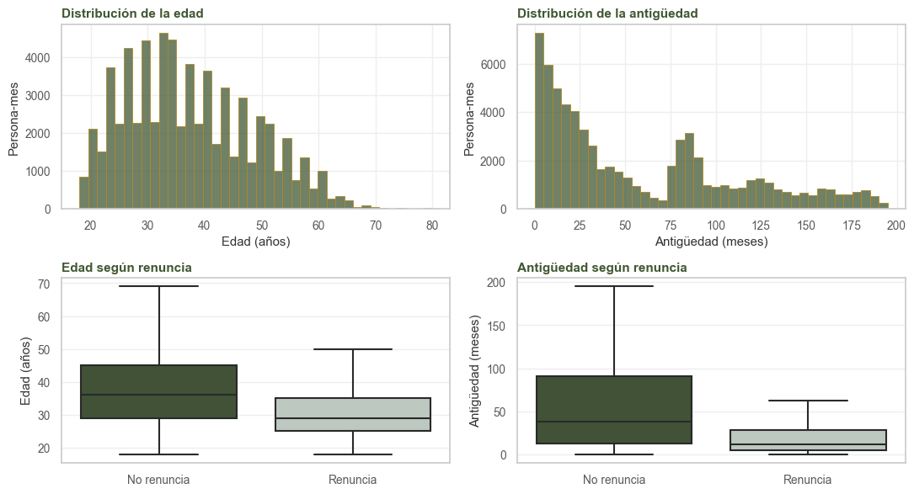
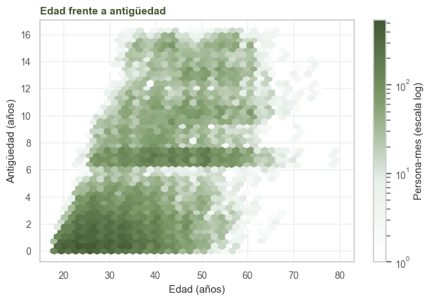
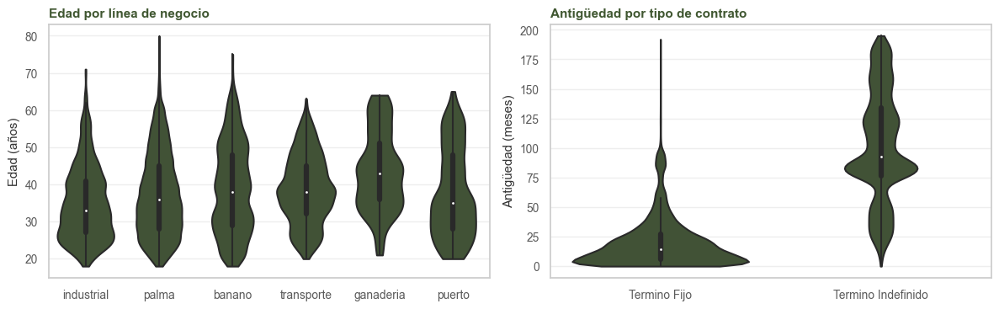
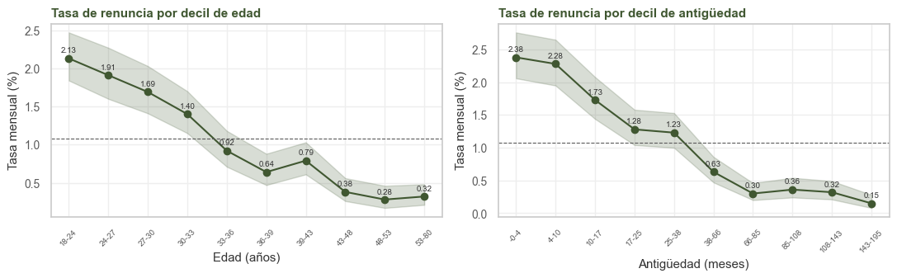
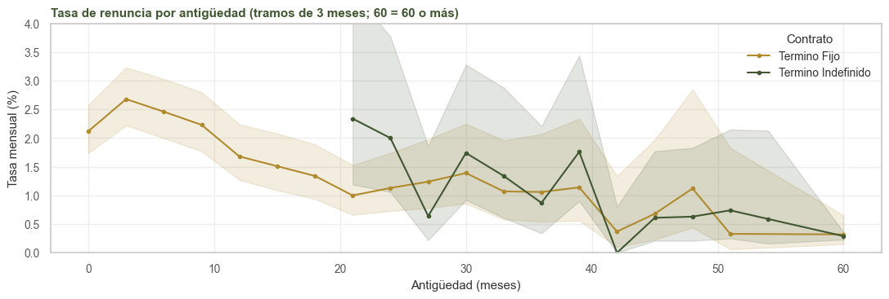
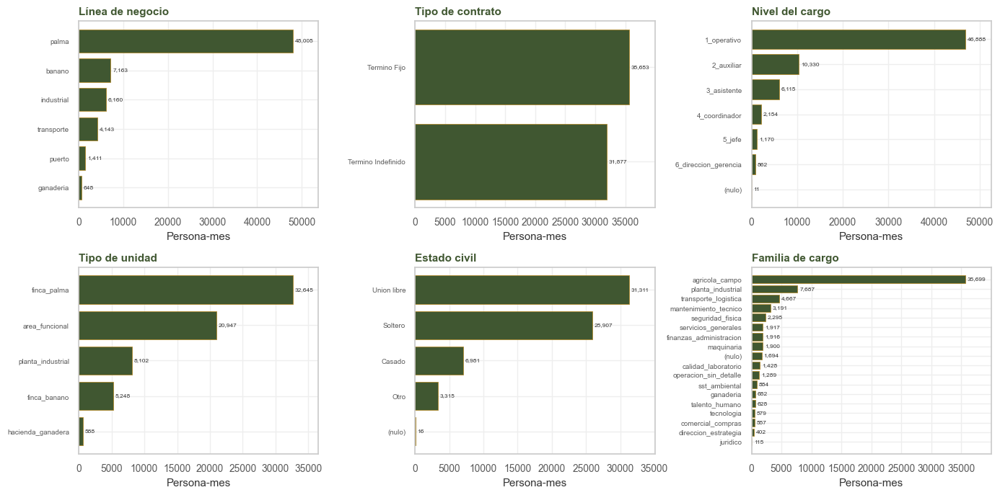
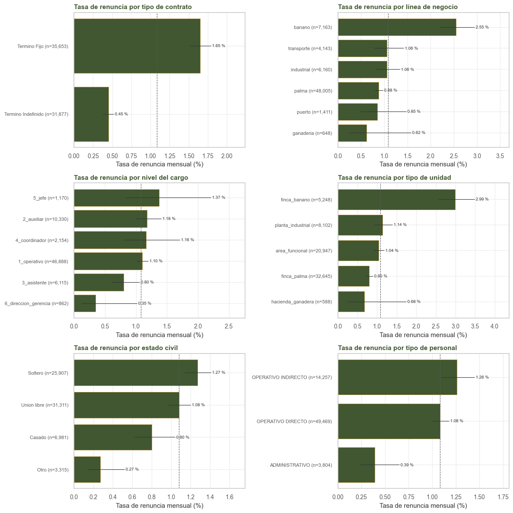
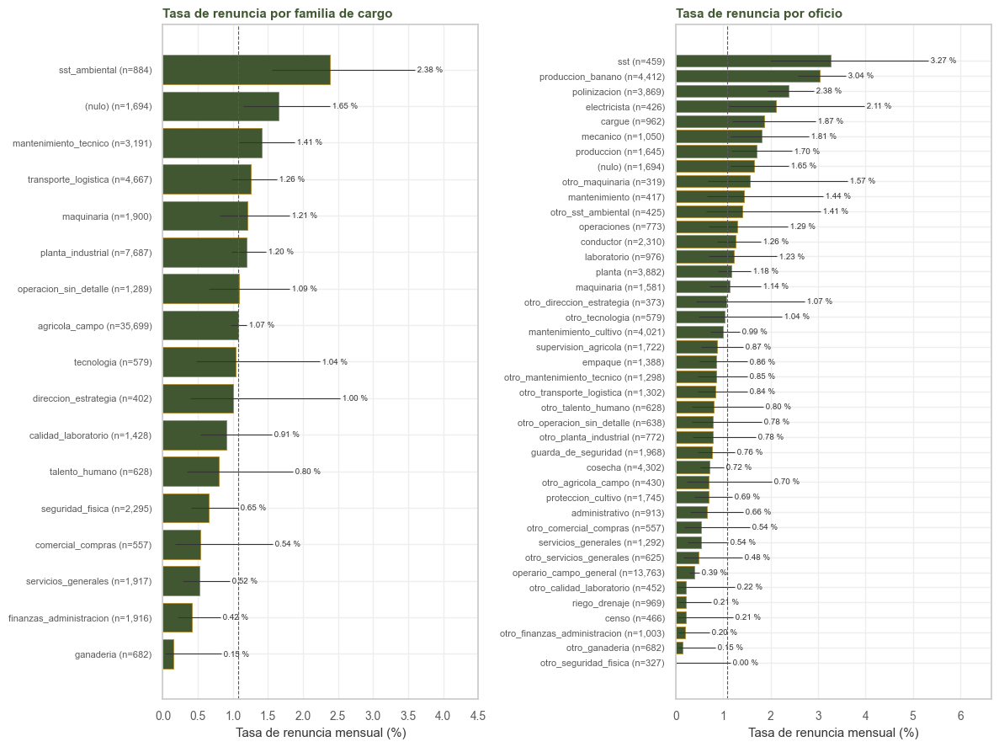
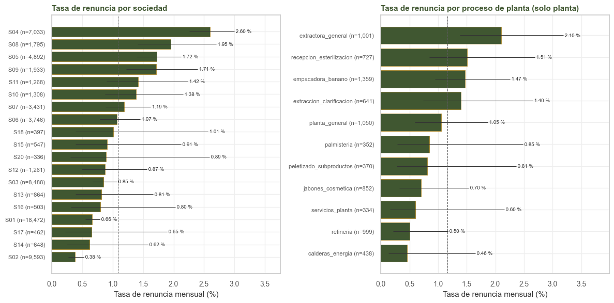
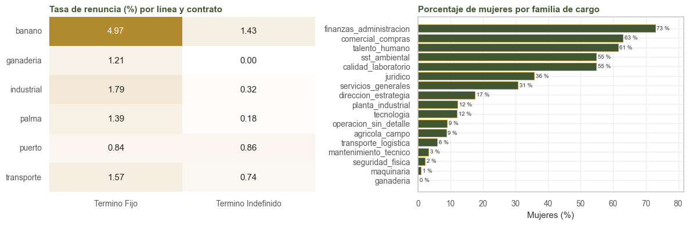

3. EDA del objetivo: univariado y bivariado#
Alcance
Este capítulo usa solo el entrenamiento (enero de 2025 a abril de 2026). Las tasas son mensuales: la probabilidad de renunciar en un mes dado. Los intervalos son de Wilson al 95 % y tratan las filas como independientes, por lo que son algo optimistas (una persona aporta varios meses).
Para una tasa \(\hat p = a / n\), el intervalo de Wilson es
Se prefiere al intervalo de Wald (\(\hat p \pm z \sqrt{\hat p (1 - \hat p) / n}\)) porque con tasas cercanas a cero este puede dar límites negativos y cubre menos de lo que dice.
import sys
import warnings
import numpy as np
import pandas as pd
import matplotlib.pyplot as plt
import seaborn as sns
from scipy import stats
from scipy.stats import chi2_contingency, fisher_exact
from statsmodels.stats.multitest import multipletests
sys.path.insert(0, '.')
warnings.filterwarnings('ignore')
from comun import (cargar, particion, estilo, tasa, tasa_ic, grafico_tasa, etiquetar, puntos,
OBJETIVO, NUM, BIN, CAT, PREDICTORAS, SEMILLA, NOMBRE, UNIDAD,
VERDE, ORO, GRIS, GRIS_CL, BORDE)
estilo()
tr, _ = particion(cargar())
BASE = 100 * tr[OBJETIVO].mean()
print(f'entrenamiento: {len(tr):,} filas | {int(tr[OBJETIVO].sum())} renuncias | '
f'tasa mensual {BASE:.2f} %')
entrenamiento: 67,530 filas | 730 renuncias | tasa mensual 1.08 %
3.1. El objetivo#
La clase positiva es el 1 % de las filas. Una tasa mensual de 1 % equivale a que cerca de una de cada nueve personas renuncie en un año. Este desbalance condiciona la métrica: un clasificador que prediga que nadie renuncia acierta el 99 % de las veces sin identificar ninguna renuncia.
eventos = tr.evento.value_counts().to_frame('filas')
eventos['%'] = (100 * eventos.filas / len(tr)).round(2)
print(eventos.to_string())
print(f'\ntasa anual equivalente: {100 * (1 - (1 - BASE / 100) ** 12):.1f} %')
print('\notras salidas por tipo (y = 0 en su último mes):')
print(tr.tipo_retiro.value_counts().to_string())
filas %
evento
ninguno 66417 98.35
renuncia 730 1.08
otra_salida 353 0.52
renuncia_administrativa 30 0.04
tasa anual equivalente: 12.2 %
otras salidas por tipo (y = 0 en su último mes):
tipo_retiro
Despido Injustificado 123
Despido Justificado 110
Vencimiento por termino Pactado 106
Fallecimiento 9
Mutuo acuerdo 4
Paso a Pensionado 1
3.2. Variables numéricas#
3.2.1. Distribución#
Hay dos variables numéricas, edad y antigüedad. Ambas tienen cola larga a la derecha, y la antigüedad concentra mucha masa en los primeros meses: la mitad de las personas lleva menos de tres años.
fig, ax = plt.subplots(2, 2, figsize=(11, 6))
for i, v in enumerate(NUM):
sns.histplot(tr[v], bins=40, ax=ax[0, i], color=VERDE, **BORDE)
ax[0, i].set(title=f'Distribución de la {NOMBRE[v]}', xlabel=UNIDAD[v], ylabel='Persona-mes')
sns.boxplot(data=tr, x=OBJETIVO, y=v, ax=ax[1, i], showfliers=False,
palette=[VERDE, GRIS_CL])
ax[1, i].set(title=f'{NOMBRE[v].capitalize()} según renuncia', xlabel='', ylabel=UNIDAD[v])
ax[1, i].set_xticklabels(['No renuncia', 'Renuncia'])
plt.tight_layout()
plt.show()
tr[NUM].describe(percentiles=[0.1, 0.25, 0.5, 0.75, 0.9]).T.round(1)

| count | mean | std | min | 10% | 25% | 50% | 75% | 90% | max | |
|---|---|---|---|---|---|---|---|---|---|---|
| edad | 67530.0 | 37.4 | 11.1 | 18.0 | 24.0 | 28.0 | 36.0 | 45.0 | 53.0 | 80.0 |
| antig_meses | 67530.0 | 58.6 | 53.4 | 0.0 | 4.0 | 13.0 | 38.0 | 91.0 | 143.0 | 195.0 |
filas = []
for v in NUM:
x = tr[v].dropna()
q1, q3 = x.quantile([0.25, 0.75])
iqr = q3 - q1
k2, p_norm = stats.normaltest(x)
filas.append({
'variable': v,
'asimetría': x.skew(),
'curtosis (exceso)': x.kurt(),
"D'Agostino K²": k2,
'p normalidad': f'{p_norm:.1e}',
'fuera de 1,5×IQR': int(((x < q1 - 1.5 * iqr) | (x > q3 + 1.5 * iqr)).sum()),
})
pd.DataFrame(filas).set_index('variable').round(2)
| variable | asimetría | curtosis (exceso) | D'Agostino K² | p normalidad | fuera de 1,5×IQR |
|---|---|---|---|---|---|
| edad | 0.46 | -0.53 | 3677.88 | 0.0e+00 | 73 |
| antig_meses | 0.79 | -0.52 | 7010.08 | 0.0e+00 | 0 |
Las dos son asimétricas a la derecha; la antigüedad lo es más y tiene curtosis negativa (una distribución ancha, con mucha masa al inicio y una meseta larga). La regresión logística no supone normalidad de las predictoras, pero la asimetría de la antigüedad justifica incluirla también en logaritmo (capítulo 7). Los 73 valores de edad por encima de las vallas son reales y se conservan (en el panel completo son 102; sección 1.5).
Observación
La prueba de normalidad rechaza con fuerza, como es de esperar con 67.530 filas: con una muestra tan grande cualquier desviación mínima resulta significativa. Por eso se examina la forma de la distribución y no solo el valor p.
3.2.2. Relación entre edad y antigüedad#
fig, ax = plt.subplots(figsize=(6.5, 4.5))
hb = ax.hexbin(tr.edad, tr.antig_meses / 12, gridsize=40, cmap='verde', mincnt=1, bins='log')
ax.set(title='Edad frente a antigüedad', xlabel='Edad (años)', ylabel='Antigüedad (años)')
fig.colorbar(hb, ax=ax, label='Persona-mes (escala log)')
plt.tight_layout()
plt.show()
r_pearson = stats.pearsonr(tr.edad.fillna(tr.edad.median()), tr.antig_meses)[0]
r_spearman = stats.spearmanr(tr.edad, tr.antig_meses, nan_policy='omit')[0]
print(f'Pearson {r_pearson:.2f} | Spearman {r_spearman:.2f}')

Pearson 0.60 | Spearman 0.60
Como la antigüedad está acotada por la edad, la nube forma un triángulo bajo la diagonal. La correlación es de 0,6 y no lineal. Las dos variables comparten información sin ser redundantes: a una misma edad hay antigüedades de 0 a 15 años.
3.2.3. Comparación según renuncia: Mann-Whitney#
Como las distribuciones son asimétricas, comparamos con la prueba de Mann-Whitney en lugar de la t. El tamaño del efecto es la correlación biserial de rangos, r = 1 − 2U/(n₁n₀), que va de −1 a 1; en valor absoluto, 0,1 es un efecto pequeño, 0,3 mediano y 0,5 grande.
filas = []
for v in NUM:
a = tr.loc[tr[OBJETIVO] == 1, v].dropna()
b = tr.loc[tr[OBJETIVO] == 0, v].dropna()
u, pv = stats.mannwhitneyu(a, b, alternative='two-sided')
filas.append({
'variable': v,
'mediana renuncia': a.median(),
'mediana no renuncia': b.median(),
'U': u,
'p': f'{pv:.1e}',
'r biserial de rangos': 1 - 2 * u / (len(a) * len(b)),
})
pd.DataFrame(filas).set_index('variable').round(3)
| variable | mediana renuncia | mediana no renuncia | U | p | r biserial de rangos |
|---|---|---|---|---|---|
| edad | 29.0 | 36.0 | 15832616.5 | 6.4e-60 | 0.351 |
| antig_meses | 12.0 | 38.0 | 14121615.5 | 2.0e-85 | 0.421 |
3.2.4. Diferencias por grupo: Kruskal-Wallis#
Diferencias de edad y antigüedad entre líneas de negocio, tipos de contrato y tipos de unidad. El tamaño del efecto es ε² = H / (n − 1), la fracción de la variabilidad de los rangos que explican los grupos.
filas = []
for v in NUM:
for g in ['linea', 'contrato', 'tipo_unidad']:
grupos = [x[v].dropna() for _, x in tr.groupby(g)]
h, pv = stats.kruskal(*grupos)
filas.append({'numérica': v, 'grupo': g, 'H': round(h, 1), 'p': f'{pv:.1e}',
'ε²': round(h / (len(tr) - 1), 3)})
fig, ax = plt.subplots(1, 2, figsize=(12, 3.8))
sns.violinplot(data=tr, x='linea', y='edad', ax=ax[0], cut=0, color=VERDE)
ax[0].set(title='Edad por línea de negocio', xlabel='', ylabel='Edad (años)')
sns.violinplot(data=tr, x='contrato', y='antig_meses', ax=ax[1], cut=0, color=VERDE)
ax[1].set(title='Antigüedad por tipo de contrato', xlabel='', ylabel='Antigüedad (meses)')
plt.tight_layout()
plt.show()
pd.DataFrame(filas)

| numérica | grupo | H | p | ε² | |
|---|---|---|---|---|---|
| 0 | edad | linea | 688.3 | 1.6e-146 | 0.010 |
| 1 | edad | contrato | 18231.2 | 0.0e+00 | 0.270 |
| 2 | edad | tipo_unidad | 325.7 | 3.1e-69 | 0.005 |
| 3 | antig_meses | linea | 1217.0 | 6.1e-261 | 0.018 |
| 4 | antig_meses | contrato | 40844.0 | 0.0e+00 | 0.605 |
| 5 | antig_meses | tipo_unidad | 208.0 | 7.3e-44 | 0.003 |
Quienes renuncian son más jóvenes (mediana de 29 frente a 36 años) y tienen mucha menos antigüedad (12 frente a 38 meses), con efectos medianos (r = 0,35 y 0,42), los mayores del análisis. En Kruskal-Wallis, el contrato explica el 60 % de la variabilidad de la antigüedad (ε² = 0,61) y el 27 % de la de la edad: el término fijo agrupa sobre todo a personas nuevas y jóvenes. Los efectos del contrato y de la antigüedad, por tanto, se superponen en buena medida. Las diferencias entre líneas y tipos de unidad son pequeñas (ε² ≤ 0,02), aunque muy significativas.
3.2.5. Tasa por tramos y curva de riesgo#
La relación con la renuncia se aprecia mejor como tasa por tramo que como diferencia de medianas.
fig, ax = plt.subplots(1, 2, figsize=(11, 3.5))
for i, v in enumerate(NUM):
t = tasa_ic(tr, pd.qcut(tr[v], 10, duplicates='drop'))
x = range(len(t))
ax[i].plot(x, t['tasa_%'], marker='o', color=VERDE)
ax[i].fill_between(x, t.ic_bajo, t.ic_alto, alpha=0.2, color=VERDE)
puntos(ax[i], x, t['tasa_%'])
ax[i].set_xticks(list(x))
ax[i].set_xticklabels([f'{iv.left:.0f}-{iv.right:.0f}' for iv in t.index], rotation=45,
fontsize=7)
ax[i].axhline(BASE, ls='--', c=GRIS, lw=0.8)
ax[i].set(title=f'Tasa de renuncia por decil de {NOMBRE[v]}', xlabel=UNIDAD[v],
ylabel='Tasa mensual (%)')
plt.tight_layout()
plt.show()

La tasa por mes de antigüedad es la función de riesgo discreta (hazard): de quienes llegan al mes k de antigüedad, la fracción que renuncia en ese mes, \(\hat h_k = d_k / n_k\), con \(d_k\) renuncias entre las \(n_k\) persona-mes que están en el mes k. Se calcula por separado para cada tipo de contrato, porque son poblaciones distintas.
fig, ax = plt.subplots(figsize=(11, 3.8))
for contrato, color in [('Termino Fijo', ORO), ('Termino Indefinido', VERDE)]:
s = tr[tr.contrato == contrato]
tramo = (s.antig_meses // 3 * 3).clip(upper=60)
t = tasa_ic(s, tramo, minimo=300) # tramos con al menos 300 filas
ax.plot(t.index, t['tasa_%'], marker='o', ms=3, label=contrato, color=color)
ax.fill_between(t.index, t.ic_bajo, t.ic_alto, alpha=0.15, color=color)
ax.set(title='Tasa de renuncia por antigüedad (tramos de 3 meses; 60 = 60 o más)',
xlabel='Antigüedad (meses)', ylabel='Tasa mensual (%)', ylim=(0, 4))
ax.legend(title='Contrato')
plt.tight_layout()
plt.show()

3.3. Variables binarias#
El primer mes de un episodio tiene una tasa mayor que el resto (1,66 % frente a 1,07 %).
pd.concat({v: tasa_ic(tr, v) for v in BIN})
| primer_mes | filas | renuncias | tasa_% | ic_bajo | ic_alto | |
|---|---|---|---|---|---|---|
| primer_mes | 0 | 65905 | 703 | 1.07 | 0.99 | 1.15 |
| 1 | 1625 | 27 | 1.66 | 1.14 | 2.41 | |
| reingreso | 0 | 62110 | 658 | 1.06 | 0.98 | 1.14 |
| 1 | 5420 | 72 | 1.33 | 1.06 | 1.67 | |
| traslado_12m | 0 | 65716 | 709 | 1.08 | 1.00 | 1.16 |
| 1 | 1814 | 21 | 1.16 | 0.76 | 1.76 |
3.4. Variables categóricas#
3.4.1. Frecuencias y categorías poco frecuentes#
fig, ax = plt.subplots(2, 3, figsize=(14, 7))
for a, v in zip(ax.ravel(), ['linea', 'contrato', 'nivel', 'tipo_unidad', 'estado_civil',
'familia_cargo']):
conteo = tr[v].fillna('(nulo)').value_counts()
barras = a.barh(conteo.index[::-1], conteo.values[::-1], color=VERDE, **BORDE)
etiquetar(a, barras, fontsize=6)
a.set(title=NOMBRE[v].capitalize(), xlabel='Persona-mes')
a.tick_params(axis='y', labelsize=7)
plt.tight_layout()
plt.show()
raras = {}
for v in CAT:
conteo = tr[v].fillna('(nulo)').value_counts()
raras[v] = {'categorías': tr[v].nunique(dropna=False),
'con < 300 filas': int((conteo < 300).sum()),
'filas en esas categorías': int(conteo[conteo < 300].sum())}
pd.DataFrame(raras).T

| categorías | con < 300 filas | filas en esas categorías | |
|---|---|---|---|
| sociedad | 22 | 3 | 553 |
| linea | 6 | 0 | 0 |
| ubicacion | 57 | 30 | 2506 |
| genero | 2 | 0 | 0 |
| estado_civil | 5 | 1 | 16 |
| contrato | 2 | 0 | 0 |
| nivel | 7 | 1 | 11 |
| familia_cargo | 18 | 1 | 115 |
| oficio | 42 | 1 | 115 |
| tipo_unidad | 5 | 0 | 0 |
| area_funcional | 14 | 1 | 96 |
| proceso_planta | 13 | 1 | 281 |
| tipo_costos | 3 | 0 | 0 |
Las categorías con menos de 300 filas (unas tres renuncias esperadas) no permiten estimar su tasa.
En el Pipeline se agrupan en una categoría de infrecuentes (OneHotEncoder(min_frequency=300)),
que también recibe las categorías que aparezcan por primera vez en el test. Donde más pesa es en
ubicacion: 30 de sus 57 categorías, con 2.506 filas. En oficio casi no hace falta, porque los
oficios pequeños ya se agruparon en otro_<familia> al construir el panel.
3.4.2. Asociación con el objetivo#
Para cada variable se reportan la cardinalidad, el tamaño de la categoría más pequeña y la asociación con el objetivo (chi-cuadrado y V de Cramér, \(V = \sqrt{\chi^2 / (n \,(\min(r, c) - 1))}\), que con un objetivo binario se reduce a \(\sqrt{\chi^2 / n}\)). Como se hacen 13 pruebas, los valores p se corrigen por comparaciones múltiples con Holm (probabilidad de algún falso positivo) y con Benjamini-Hochberg (proporción de falsos descubrimientos). Los gráficos muestran solo las categorías con al menos 300 filas, porque por debajo el intervalo es demasiado ancho; la tabla sí las cuenta.
filas = []
for v in CAT:
x = tr[v].fillna('(nulo)')
chi, pv, gl, _ = chi2_contingency(pd.crosstab(x, tr[OBJETIVO]).to_numpy(), correction=False)
r = tasa(tr, x)
filas.append({
'variable': v,
'categorías': x.nunique(),
'filas cat. mín.': int(x.value_counts().min()),
'cat. con < 5 renuncias': int((r.renuncias < 5).sum()),
'chi2': round(chi, 1),
'gl': gl,
'p': f'{pv:.1e}',
'V de Cramér': round(np.sqrt(chi / len(tr)), 3),
'tasa mín %': round(r['tasa_%'].min(), 2),
'tasa máx %': round(r['tasa_%'].max(), 2),
})
asoc = pd.DataFrame(filas).set_index('variable').sort_values('V de Cramér', ascending=False)
# corrección por comparaciones múltiples
p_crudo = asoc.p.astype(float).to_numpy()
asoc['p Holm'] = [f'{x:.1e}' for x in multipletests(p_crudo, method='holm')[1]]
asoc['p FDR (BH)'] = [f'{x:.1e}' for x in multipletests(p_crudo, method='fdr_bh')[1]]
asoc['significativa (Holm, 5 %)'] = multipletests(p_crudo, method='holm')[0]
asoc
| variable | categorías | filas cat. mín. | cat. con < 5 renuncias | chi2 | gl | p | V de Cramér | tasa mín % | tasa máx % | p Holm | p FDR (BH) | significativa (Holm, 5 %) |
|---|---|---|---|---|---|---|---|---|---|---|---|---|
| oficio | 42 | 115 | 11 | 385.6 | 41 | 1.4e-57 | 0.076 | 0.00 | 3.27 | 1.8e-56 | 1.8e-56 | True |
| ubicacion | 57 | 1 | 33 | 331.1 | 56 | 1.1e-40 | 0.070 | 0.00 | 5.56 | 9.9e-40 | 2.9e-40 | True |
| sociedad | 22 | 130 | 8 | 279.5 | 21 | 4.7e-47 | 0.064 | 0.00 | 2.60 | 5.2e-46 | 2.0e-46 | True |
| contrato | 2 | 31877 | 0 | 228.1 | 1 | 1.6e-51 | 0.058 | 0.45 | 1.65 | 1.9e-50 | 1.0e-50 | True |
| tipo_unidad | 5 | 588 | 1 | 205.4 | 4 | 2.6e-43 | 0.055 | 0.68 | 2.99 | 2.6e-42 | 8.4e-43 | True |
| linea | 6 | 648 | 1 | 165.9 | 5 | 5.6e-34 | 0.050 | 0.62 | 2.55 | 4.5e-33 | 1.2e-33 | True |
| familia_cargo | 18 | 115 | 4 | 51.7 | 17 | 2.3e-05 | 0.028 | 0.00 | 2.38 | 1.4e-04 | 3.7e-05 | True |
| estado_civil | 5 | 16 | 1 | 33.9 | 4 | 7.9e-07 | 0.022 | 0.00 | 1.27 | 5.5e-06 | 1.5e-06 | True |
| area_funcional | 14 | 96 | 4 | 26.0 | 13 | 1.7e-02 | 0.020 | 0.00 | 1.88 | 6.8e-02 | 2.2e-02 | False |
| proceso_planta | 13 | 281 | 4 | 21.9 | 12 | 3.8e-02 | 0.018 | 0.46 | 2.10 | 1.1e-01 | 4.5e-02 | False |
| tipo_costos | 3 | 3804 | 0 | 20.8 | 2 | 3.0e-05 | 0.018 | 0.39 | 1.26 | 1.5e-04 | 4.3e-05 | True |
| nivel | 7 | 11 | 2 | 11.0 | 6 | 8.7e-02 | 0.013 | 0.00 | 1.37 | 1.7e-01 | 9.4e-02 | False |
| genero | 2 | 8898 | 0 | 2.4 | 1 | 1.2e-01 | 0.006 | 0.92 | 1.11 | 1.7e-01 | 1.2e-01 | False |
Observación
Con 67.530 filas casi todas las asociaciones resultan significativas y el valor p ordena poco. El tamaño del efecto (V de Cramér) es el que permite comparar las variables.
fig, ax = plt.subplots(3, 2, figsize=(12, 12))
for a, v in zip(ax.ravel(), ['contrato', 'linea', 'nivel', 'tipo_unidad', 'estado_civil',
'tipo_costos']):
t = tasa_ic(tr, tr[v].fillna('(nulo)'), minimo=300)
grafico_tasa(a, t, f'Tasa de renuncia por {NOMBRE[v]}', BASE)
plt.tight_layout()
plt.show()

fig, ax = plt.subplots(1, 2, figsize=(12, 9))
for a, v in zip(ax, ['familia_cargo', 'oficio']):
t = tasa_ic(tr, tr[v].fillna('(nulo)'), minimo=300)
grafico_tasa(a, t, f'Tasa de renuncia por {NOMBRE[v]}', BASE)
plt.tight_layout()
plt.show()

planta = tr[tr.proceso_planta != 'no_aplica']
fig, ax = plt.subplots(1, 2, figsize=(12, 6))
grafico_tasa(ax[0], tasa_ic(tr, tr.sociedad, minimo=300), 'Tasa de renuncia por sociedad', BASE)
grafico_tasa(ax[1], tasa_ic(planta, planta.proceso_planta, minimo=300),
'Tasa de renuncia por proceso de planta (solo planta)', 100 * planta[OBJETIVO].mean())
plt.tight_layout()
plt.show()

3.4.3. Comparación entre niveles#
Los gráficos muestran la tasa de cada categoría frente a la media. Para comparar las categorías entre sí, cada una se contrasta con una referencia, la categoría más frecuente de su variable, mediante la razón de tasas
donde a y n son las renuncias y las filas de la categoría, y \(a_0\) y \(n_0\) las de la referencia. Cada contraste se prueba con la prueba exacta de Fisher y los valores p se corrigen con Holm sobre todos los contrastes del capítulo. Se incluyen las categorías con al menos 300 filas. La tabla visible trae las variables de pocas categorías; la de las variables de muchas categorías está plegada debajo.
def contraste(df, v, minimo=300):
"""Razón de tasas de cada categoría frente a la más frecuente, con IC y prueba de Fisher."""
t = tasa(df, df[v].fillna('(nulo)'), minimo).sort_values('filas', ascending=False)
ref = t.index[0]
a0, n0 = t.loc[ref, 'renuncias'], t.loc[ref, 'filas']
filas = []
for nivel, r in t.iterrows():
a, n = r.renuncias, r.filas
fila = {'variable': NOMBRE[v], 'categoría': nivel, 'filas': int(n),
'renuncias': int(a), 'tasa %': 100 * a / n}
if nivel == ref:
fila.update({'razón': 1.0, 'IC bajo': np.nan, 'IC alto': np.nan, 'p': np.nan})
else:
rr = (a / n) / (a0 / n0)
ee = np.sqrt(1 / a - 1 / n + 1 / a0 - 1 / n0) if a > 0 else np.nan
fila.update({'razón': rr, 'IC bajo': rr * np.exp(-1.96 * ee),
'IC alto': rr * np.exp(1.96 * ee),
'p': fisher_exact([[a, n - a], [a0, n0 - a0]])[1]})
filas.append(fila)
return pd.DataFrame(filas)
niveles = pd.concat([contraste(tr, v) for v in CAT], ignore_index=True)
con_p = niveles.p.notna()
niveles.loc[con_p, 'p Holm'] = multipletests(niveles.p[con_p], method='holm')[1]
niveles['referencia'] = np.where(con_p, '', 'ref.')
niveles = niveles.set_index(['variable', 'categoría'])
print(f'{con_p.sum()} contrastes; significativos con Holm al 5 %: '
f'{(niveles["p Holm"] < 0.05).sum()}')
POCAS = ['contrato', 'linea', 'tipo_unidad', 'tipo_costos', 'nivel', 'estado_civil', 'genero']
columnas = ['filas', 'renuncias', 'tasa %', 'razón', 'IC bajo', 'IC alto', 'p Holm', 'referencia']
niveles.loc[[NOMBRE[v] for v in POCAS], columnas].round(3)
144 contrastes; significativos con Holm al 5 %: 28
| variable / categoría | filas | renuncias | tasa % | razón | IC bajo | IC alto | p Holm | referencia | |
|---|---|---|---|---|---|---|---|---|---|
| tipo de contrato | Termino Fijo | 35653 | 588 | 1.649 | 1.000 | NaN | NaN | NaN | ref. |
| Termino Indefinido | 31877 | 142 | 0.445 | 0.270 | 0.225 | 0.324 | 0.000 | ||
| línea de negocio | palma | 48005 | 422 | 0.879 | 1.000 | NaN | NaN | NaN | ref. |
| banano | 7163 | 183 | 2.555 | 2.906 | 2.448 | 3.451 | 0.000 | ||
| industrial | 6160 | 65 | 1.055 | 1.200 | 0.926 | 1.556 | 1.000 | ||
| transporte | 4143 | 44 | 1.062 | 1.208 | 0.887 | 1.645 | 1.000 | ||
| puerto | 1411 | 12 | 0.850 | 0.967 | 0.546 | 1.713 | 1.000 | ||
| ganaderia | 648 | 4 | 0.617 | 0.702 | 0.263 | 1.874 | 1.000 | ||
| tipo de unidad | finca_palma | 32645 | 260 | 0.796 | 1.000 | NaN | NaN | NaN | ref. |
| area_funcional | 20947 | 217 | 1.036 | 1.301 | 1.087 | 1.556 | 0.496 | ||
| planta_industrial | 8102 | 92 | 1.136 | 1.426 | 1.125 | 1.806 | 0.500 | ||
| finca_banano | 5248 | 157 | 2.992 | 3.756 | 3.088 | 4.569 | 0.000 | ||
| hacienda_ganadera | 588 | 4 | 0.680 | 0.854 | 0.319 | 2.285 | 1.000 | ||
| tipo de personal | OPERATIVO DIRECTO | 49469 | 536 | 1.084 | 1.000 | NaN | NaN | NaN | ref. |
| OPERATIVO INDIRECTO | 14257 | 179 | 1.256 | 1.159 | 0.979 | 1.371 | 1.000 | ||
| ADMINISTRATIVO | 3804 | 15 | 0.394 | 0.364 | 0.218 | 0.607 | 0.001 | ||
| nivel del cargo | 1_operativo | 46888 | 515 | 1.098 | 1.000 | NaN | NaN | NaN | ref. |
| 2_auxiliar | 10330 | 122 | 1.181 | 1.075 | 0.884 | 1.308 | 1.000 | ||
| 3_asistente | 6115 | 49 | 0.801 | 0.730 | 0.545 | 0.977 | 1.000 | ||
| 4_coordinador | 2154 | 25 | 1.161 | 1.057 | 0.709 | 1.575 | 1.000 | ||
| 5_jefe | 1170 | 16 | 1.368 | 1.245 | 0.760 | 2.041 | 1.000 | ||
| 6_direccion_gerencia | 862 | 3 | 0.348 | 0.317 | 0.102 | 0.984 | 1.000 | ||
| estado civil | Union libre | 31311 | 337 | 1.076 | 1.000 | NaN | NaN | NaN | ref. |
| Soltero | 25907 | 328 | 1.266 | 1.176 | 1.011 | 1.368 | 1.000 | ||
| Casado | 6981 | 56 | 0.802 | 0.745 | 0.562 | 0.988 | 1.000 | ||
| Otro | 3315 | 9 | 0.271 | 0.252 | 0.130 | 0.489 | 0.000 | ||
| género | Masculino | 58632 | 648 | 1.105 | 1.000 | NaN | NaN | NaN | ref. |
| Femenino | 8898 | 82 | 0.922 | 0.834 | 0.663 | 1.048 | 1.000 |
with pd.option_context('display.max_rows', 200):
display(niveles.drop(index=[NOMBRE[v] for v in POCAS])[columnas].round(3))
Show code cell output
| variable / categoría | filas | renuncias | tasa % | razón | IC bajo | IC alto | p Holm | referencia | |
|---|---|---|---|---|---|---|---|---|---|
| sociedad | S01 | 18472 | 122 | 0.660 | 1.000 | NaN | NaN | NaN | ref. |
| S02 | 9593 | 36 | 0.375 | 0.568 | 0.392 | 0.823 | 0.259 | ||
| S03 | 8488 | 72 | 0.848 | 1.284 | 0.961 | 1.717 | 1.000 | ||
| S04 | 7033 | 183 | 2.602 | 3.940 | 3.138 | 4.946 | 0.000 | ||
| S05 | 4892 | 84 | 1.717 | 2.600 | 1.973 | 3.427 | 0.000 | ||
| S06 | 3746 | 40 | 1.068 | 1.617 | 1.133 | 2.307 | 1.000 | ||
| S07 | 3431 | 41 | 1.195 | 1.809 | 1.273 | 2.573 | 0.179 | ||
| S09 | 1933 | 33 | 1.707 | 2.585 | 1.765 | 3.786 | 0.001 | ||
| S08 | 1795 | 35 | 1.950 | 2.952 | 2.034 | 4.286 | 0.000 | ||
| S10 | 1308 | 18 | 1.376 | 2.084 | 1.274 | 3.407 | 0.598 | ||
| S11 | 1268 | 18 | 1.420 | 2.149 | 1.315 | 3.514 | 0.500 | ||
| S12 | 1261 | 11 | 0.872 | 1.321 | 0.715 | 2.441 | 1.000 | ||
| S13 | 864 | 7 | 0.810 | 1.227 | 0.574 | 2.620 | 1.000 | ||
| S14 | 648 | 4 | 0.617 | 0.935 | 0.346 | 2.522 | 1.000 | ||
| S15 | 547 | 5 | 0.914 | 1.384 | 0.568 | 3.371 | 1.000 | ||
| S16 | 503 | 4 | 0.795 | 1.204 | 0.447 | 3.247 | 1.000 | ||
| S17 | 462 | 3 | 0.649 | 0.983 | 0.314 | 3.079 | 1.000 | ||
| S18 | 397 | 4 | 1.008 | 1.526 | 0.566 | 4.110 | 1.000 | ||
| S20 | 336 | 3 | 0.893 | 1.352 | 0.432 | 4.228 | 1.000 | ||
| ubicación | U038 | 6696 | 99 | 1.478 | 1.000 | NaN | NaN | NaN | ref. |
| U008 | 6202 | 108 | 1.741 | 1.178 | 0.899 | 1.544 | 1.000 | ||
| U036 | 5838 | 29 | 0.497 | 0.336 | 0.222 | 0.507 | 0.000 | ||
| U033 | 5715 | 17 | 0.297 | 0.201 | 0.120 | 0.336 | 0.000 | ||
| U046 | 3736 | 44 | 1.178 | 0.797 | 0.560 | 1.134 | 1.000 | ||
| U041 | 3476 | 17 | 0.489 | 0.331 | 0.198 | 0.552 | 0.000 | ||
| U032 | 3457 | 46 | 1.331 | 0.900 | 0.636 | 1.274 | 1.000 | ||
| U011 | 3154 | 74 | 2.346 | 1.587 | 1.178 | 2.138 | 0.324 | ||
| U051 | 2987 | 22 | 0.737 | 0.498 | 0.314 | 0.789 | 0.224 | ||
| U002 | 2769 | 13 | 0.469 | 0.318 | 0.178 | 0.565 | 0.002 | ||
| U057 | 2703 | 31 | 1.147 | 0.776 | 0.519 | 1.158 | 1.000 | ||
| U043 | 2387 | 22 | 0.922 | 0.623 | 0.394 | 0.987 | 1.000 | ||
| U039 | 1942 | 8 | 0.412 | 0.279 | 0.136 | 0.572 | 0.007 | ||
| U001 | 1883 | 19 | 1.009 | 0.682 | 0.419 | 1.112 | 1.000 | ||
| U012 | 1878 | 62 | 3.301 | 2.233 | 1.632 | 3.054 | 0.000 | ||
| U040 | 1454 | 15 | 1.032 | 0.698 | 0.407 | 1.197 | 1.000 | ||
| U034 | 1431 | 5 | 0.349 | 0.236 | 0.096 | 0.579 | 0.017 | ||
| U016 | 1292 | 18 | 1.393 | 0.942 | 0.572 | 1.552 | 1.000 | ||
| U042 | 1068 | 5 | 0.468 | 0.317 | 0.129 | 0.776 | 0.598 | ||
| U009 | 1001 | 24 | 2.398 | 1.622 | 1.043 | 2.520 | 1.000 | ||
| U031 | 855 | 8 | 0.936 | 0.633 | 0.309 | 1.296 | 1.000 | ||
| U053 | 668 | 5 | 0.749 | 0.506 | 0.207 | 1.239 | 1.000 | ||
| U056 | 641 | 3 | 0.468 | 0.317 | 0.101 | 0.996 | 1.000 | ||
| U052 | 583 | 3 | 0.515 | 0.348 | 0.111 | 1.094 | 1.000 | ||
| U044 | 560 | 0 | 0.000 | 0.000 | NaN | NaN | 0.095 | ||
| U007 | 338 | 9 | 2.663 | 1.801 | 0.918 | 3.532 | 1.000 | ||
| U037 | 310 | 2 | 0.645 | 0.436 | 0.108 | 1.761 | 1.000 | ||
| familia de cargo | agricola_campo | 35699 | 383 | 1.073 | 1.000 | NaN | NaN | NaN | ref. |
| planta_industrial | 7687 | 92 | 1.197 | 1.116 | 0.890 | 1.399 | 1.000 | ||
| transporte_logistica | 4667 | 59 | 1.264 | 1.178 | 0.897 | 1.547 | 1.000 | ||
| mantenimiento_tecnico | 3191 | 45 | 1.410 | 1.314 | 0.967 | 1.786 | 1.000 | ||
| seguridad_fisica | 2295 | 15 | 0.654 | 0.609 | 0.364 | 1.019 | 1.000 | ||
| servicios_generales | 1917 | 10 | 0.522 | 0.486 | 0.260 | 0.909 | 1.000 | ||
| finanzas_administracion | 1916 | 8 | 0.418 | 0.389 | 0.194 | 0.783 | 0.384 | ||
| maquinaria | 1900 | 23 | 1.211 | 1.128 | 0.743 | 1.714 | 1.000 | ||
| (nulo) | 1694 | 28 | 1.653 | 1.541 | 1.053 | 2.254 | 1.000 | ||
| calidad_laboratorio | 1428 | 13 | 0.910 | 0.849 | 0.489 | 1.471 | 1.000 | ||
| operacion_sin_detalle | 1289 | 14 | 1.086 | 1.012 | 0.596 | 1.721 | 1.000 | ||
| sst_ambiental | 884 | 21 | 2.376 | 2.214 | 1.434 | 3.418 | 0.170 | ||
| ganaderia | 682 | 1 | 0.147 | 0.137 | 0.019 | 0.971 | 1.000 | ||
| talento_humano | 628 | 5 | 0.796 | 0.742 | 0.308 | 1.787 | 1.000 | ||
| tecnologia | 579 | 6 | 1.036 | 0.966 | 0.433 | 2.154 | 1.000 | ||
| comercial_compras | 557 | 3 | 0.539 | 0.502 | 0.162 | 1.559 | 1.000 | ||
| direccion_estrategia | 402 | 4 | 0.995 | 0.927 | 0.348 | 2.472 | 1.000 | ||
| oficio | operario_campo_general | 13763 | 53 | 0.385 | 1.000 | NaN | NaN | NaN | ref. |
| produccion_banano | 4412 | 134 | 3.037 | 7.887 | 5.749 | 10.820 | 0.000 | ||
| cosecha | 4302 | 31 | 0.721 | 1.871 | 1.203 | 2.911 | 0.682 | ||
| mantenimiento_cultivo | 4021 | 40 | 0.995 | 2.583 | 1.716 | 3.889 | 0.002 | ||
| planta | 3882 | 46 | 1.185 | 3.077 | 2.076 | 4.560 | 0.000 | ||
| polinizacion | 3869 | 92 | 2.378 | 6.175 | 4.412 | 8.642 | 0.000 | ||
| conductor | 2310 | 29 | 1.255 | 3.260 | 2.078 | 5.116 | 0.000 | ||
| guarda_de_seguridad | 1968 | 15 | 0.762 | 1.979 | 1.118 | 3.504 | 1.000 | ||
| proteccion_cultivo | 1745 | 12 | 0.688 | 1.786 | 0.956 | 3.335 | 1.000 | ||
| supervision_agricola | 1722 | 15 | 0.871 | 2.262 | 1.278 | 4.004 | 0.974 | ||
| (nulo) | 1694 | 28 | 1.653 | 4.292 | 2.723 | 6.766 | 0.000 | ||
| produccion | 1645 | 28 | 1.702 | 4.420 | 2.804 | 6.967 | 0.000 | ||
| maquinaria | 1581 | 18 | 1.139 | 2.956 | 1.736 | 5.034 | 0.027 | ||
| empaque | 1388 | 12 | 0.865 | 2.245 | 1.203 | 4.191 | 1.000 | ||
| otro_transporte_logistica | 1302 | 11 | 0.845 | 2.194 | 1.149 | 4.190 | 1.000 | ||
| otro_mantenimiento_tecnico | 1298 | 11 | 0.847 | 2.201 | 1.152 | 4.202 | 1.000 | ||
| servicios_generales | 1292 | 7 | 0.542 | 1.407 | 0.641 | 3.088 | 1.000 | ||
| mecanico | 1050 | 19 | 1.810 | 4.699 | 2.793 | 7.906 | 0.000 | ||
| otro_finanzas_administracion | 1003 | 2 | 0.199 | 0.518 | 0.126 | 2.122 | 1.000 | ||
| laboratorio | 976 | 12 | 1.230 | 3.193 | 1.712 | 5.954 | 0.118 | ||
| riego_drenaje | 969 | 2 | 0.206 | 0.536 | 0.131 | 2.196 | 1.000 | ||
| cargue | 962 | 18 | 1.871 | 4.859 | 2.858 | 8.261 | 0.000 | ||
| administrativo | 913 | 6 | 0.657 | 1.707 | 0.736 | 3.959 | 1.000 | ||
| operaciones | 773 | 10 | 1.294 | 3.359 | 1.716 | 6.577 | 0.188 | ||
| otro_planta_industrial | 772 | 6 | 0.777 | 2.018 | 0.870 | 4.680 | 1.000 | ||
| otro_ganaderia | 682 | 1 | 0.147 | 0.381 | 0.053 | 2.749 | 1.000 | ||
| otro_operacion_sin_detalle | 638 | 5 | 0.784 | 2.035 | 0.816 | 5.074 | 1.000 | ||
| otro_talento_humano | 628 | 5 | 0.796 | 2.068 | 0.829 | 5.154 | 1.000 | ||
| otro_servicios_generales | 625 | 3 | 0.480 | 1.246 | 0.391 | 3.978 | 1.000 | ||
| otro_tecnologia | 579 | 6 | 1.036 | 2.691 | 1.162 | 6.234 | 1.000 | ||
| otro_comercial_compras | 557 | 3 | 0.539 | 1.399 | 0.438 | 4.462 | 1.000 | ||
| censo | 466 | 1 | 0.215 | 0.557 | 0.077 | 4.021 | 1.000 | ||
| sst | 459 | 15 | 3.268 | 8.486 | 4.820 | 14.941 | 0.000 | ||
| otro_calidad_laboratorio | 452 | 1 | 0.221 | 0.575 | 0.080 | 4.145 | 1.000 | ||
| otro_agricola_campo | 430 | 3 | 0.698 | 1.812 | 0.568 | 5.775 | 1.000 | ||
| electricista | 426 | 9 | 2.113 | 5.486 | 2.724 | 11.048 | 0.011 | ||
| otro_sst_ambiental | 425 | 6 | 1.412 | 3.666 | 1.585 | 8.481 | 0.815 | ||
| mantenimiento | 417 | 6 | 1.439 | 3.736 | 1.615 | 8.643 | 0.755 | ||
| otro_direccion_estrategia | 373 | 4 | 1.072 | 2.785 | 1.013 | 7.654 | 1.000 | ||
| otro_seguridad_fisica | 327 | 0 | 0.000 | 0.000 | NaN | NaN | 1.000 | ||
| otro_maquinaria | 319 | 5 | 1.567 | 4.070 | 1.638 | 10.114 | 0.974 | ||
| área funcional | no_aplica | 46583 | 513 | 1.101 | 1.000 | NaN | NaN | NaN | ref. |
| transporte_logistica | 5925 | 78 | 1.316 | 1.195 | 0.943 | 1.515 | 1.000 | ||
| mantenimiento_tecnico | 3034 | 39 | 1.285 | 1.167 | 0.845 | 1.613 | 1.000 | ||
| seguridad_fisica | 3025 | 22 | 0.727 | 0.660 | 0.432 | 1.010 | 1.000 | ||
| finanzas_administracion | 2414 | 15 | 0.621 | 0.564 | 0.338 | 0.941 | 1.000 | ||
| servicios_generales | 1280 | 10 | 0.781 | 0.709 | 0.380 | 1.323 | 1.000 | ||
| calidad_laboratorio | 1208 | 12 | 0.993 | 0.902 | 0.510 | 1.594 | 1.000 | ||
| sst_ambiental | 1012 | 19 | 1.877 | 1.705 | 1.083 | 2.683 | 1.000 | ||
| maquinaria | 942 | 10 | 1.062 | 0.964 | 0.517 | 1.796 | 1.000 | ||
| comercial_compras | 608 | 3 | 0.493 | 0.448 | 0.144 | 1.390 | 1.000 | ||
| talento_humano | 595 | 5 | 0.840 | 0.763 | 0.317 | 1.834 | 1.000 | ||
| tecnologia | 507 | 3 | 0.592 | 0.537 | 0.173 | 1.666 | 1.000 | ||
| direccion_estrategia | 301 | 1 | 0.332 | 0.302 | 0.043 | 2.139 | 1.000 | ||
| proceso de planta | no_aplica | 59126 | 632 | 1.069 | 1.000 | NaN | NaN | NaN | ref. |
| empacadora_banano | 1359 | 20 | 1.472 | 1.377 | 0.885 | 2.142 | 1.000 | ||
| planta_general | 1050 | 11 | 1.048 | 0.980 | 0.542 | 1.773 | 1.000 | ||
| extractora_general | 1001 | 21 | 2.098 | 1.963 | 1.276 | 3.018 | 0.501 | ||
| refineria | 999 | 5 | 0.501 | 0.468 | 0.195 | 1.126 | 1.000 | ||
| jabones_cosmetica | 852 | 6 | 0.704 | 0.659 | 0.296 | 1.468 | 1.000 | ||
| recepcion_esterilizacion | 727 | 11 | 1.513 | 1.416 | 0.783 | 2.558 | 1.000 | ||
| extraccion_clarificacion | 641 | 9 | 1.404 | 1.314 | 0.683 | 2.525 | 1.000 | ||
| calderas_energia | 438 | 2 | 0.457 | 0.427 | 0.107 | 1.706 | 1.000 | ||
| peletizado_subproductos | 370 | 3 | 0.811 | 0.759 | 0.245 | 2.347 | 1.000 | ||
| palmisteria | 352 | 3 | 0.852 | 0.797 | 0.258 | 2.467 | 1.000 | ||
| servicios_planta | 334 | 2 | 0.599 | 0.560 | 0.140 | 2.236 | 1.000 |
De 144 contrastes, 28 son significativos con Holm, y se concentran en tres ejes:
Contrato. El término indefinido renuncia a una tasa de 0,45 % mensual frente a 1,65 % del término fijo: una razón de 0,27 (IC de 0,23 a 0,32), o sea que el término fijo renuncia 3,7 veces más. Es la diferencia más precisa del capítulo.
Banano. La línea de banano renuncia 2,9 veces más que la de palma (IC de 2,4 a 3,5), y la finca de banano 3,8 veces más que la de palma. En oficio, las razones más altas son las de banano (producción de banano 7,9 y polinización 6,2 veces el operario de campo general). Es una sola señal repartida entre variables anidadas. Industrial, transporte, puerto y ganadería no se distinguen de palma.
Personal administrativo. Renuncia a una tercera parte de la tasa del operativo directo (0,36; IC de 0,22 a 0,61). En estado civil, la categoría “otro” (los estados poco frecuentes, agrupados) renuncia a la cuarta parte que la unión libre.
Otras diferencias que se ven en los gráficos no resisten la corrección: el nivel del cargo, el género (0,83; IC de 0,66 a 1,05), soltero y casado frente a unión libre, y la mayoría de familias de cargo y procesos de planta. En oficio la referencia es de riesgo bajo (0,39 %), por eso casi todas las razones son mayores que uno. Como en el resto del capítulo, los contrastes tratan las filas como independientes y son algo optimistas; el modelo del capítulo 7 los estima ajustando por las demás variables.
3.5. Información mutua frente al azar#
La información mutua con el objetivo mide cuánto reduce una variable la incertidumbre sobre la renuncia:
que vale cero si y solo si X y Y son independientes, y a diferencia de una correlación capta relaciones no lineales. Crece con el número de categorías aunque no haya relación; por eso se compara con su valor cuando el objetivo se permuta al azar (20 permutaciones) y se reporta el exceso sobre ese valor.
def informacion_mutua(x, y):
t = pd.crosstab(x, y).to_numpy().astype(float)
t /= t.sum()
px = t.sum(1, keepdims=True)
py = t.sum(0, keepdims=True)
nz = t > 0
return float((t[nz] * np.log(t[nz] / (px @ py)[nz])).sum())
rng = np.random.default_rng(SEMILLA)
y = tr[OBJETIVO].to_numpy()
H = -(y.mean() * np.log(y.mean()) + (1 - y.mean()) * np.log(1 - y.mean())) # entropía de y
filas = []
for v in PREDICTORAS:
if v in NUM:
x = pd.qcut(tr[v].fillna(-1), 20, duplicates='drop')
else:
x = tr[v].fillna('(nulo)')
x = x.astype(str).to_numpy()
observada = informacion_mutua(x, y)
azar = np.mean([informacion_mutua(x, rng.permutation(y)) for _ in range(20)])
filas.append({'variable': v, 'IM observada': observada, 'IM por azar': azar,
'exceso': observada - azar, '% de H(y)': 100 * (observada - azar) / H})
im = pd.DataFrame(filas).set_index('variable').sort_values('exceso', ascending=False)
im.round({'IM observada': 5, 'IM por azar': 5, 'exceso': 5, '% de H(y)': 2})
| variable | IM observada | IM por azar | exceso | % de H(y) |
|---|---|---|---|---|
| antig_meses | 0.00340 | 0.00014 | 0.00326 | 5.46 |
| oficio | 0.00258 | 0.00029 | 0.00229 | 3.84 |
| edad | 0.00231 | 0.00014 | 0.00217 | 3.63 |
| ubicacion | 0.00238 | 0.00041 | 0.00196 | 3.29 |
| contrato | 0.00183 | 0.00001 | 0.00182 | 3.05 |
| sociedad | 0.00187 | 0.00017 | 0.00170 | 2.85 |
| tipo_unidad | 0.00111 | 0.00002 | 0.00109 | 1.82 |
| linea | 0.00094 | 0.00004 | 0.00090 | 1.51 |
| estado_civil | 0.00032 | 0.00002 | 0.00030 | 0.50 |
| familia_cargo | 0.00042 | 0.00014 | 0.00027 | 0.46 |
| tipo_costos | 0.00019 | 0.00001 | 0.00018 | 0.30 |
| area_funcional | 0.00021 | 0.00010 | 0.00011 | 0.19 |
| proceso_planta | 0.00015 | 0.00008 | 0.00007 | 0.12 |
| nivel | 0.00010 | 0.00004 | 0.00006 | 0.10 |
| primer_mes | 0.00003 | 0.00001 | 0.00002 | 0.04 |
| reingreso | 0.00002 | 0.00000 | 0.00002 | 0.03 |
| genero | 0.00002 | 0.00001 | 0.00001 | 0.02 |
| traslado_12m | 0.00000 | 0.00001 | -0.00001 | -0.01 |
3.6. Interacciones#
fig, ax = plt.subplots(1, 2, figsize=(12, 4))
t = tr.pivot_table(index='linea', columns='contrato', values=OBJETIVO, aggfunc='mean') * 100
sns.heatmap(t, annot=True, fmt='.2f', cmap='oro', ax=ax[0], cbar=False)
ax[0].set(title='Tasa de renuncia (%) por línea y contrato', xlabel='', ylabel='')
mujeres = tr.groupby('familia_cargo').genero.apply(lambda s: 100 * (s == 'Femenino').mean())
mujeres = mujeres.sort_values()
barras = ax[1].barh(mujeres.index, mujeres.values, color=VERDE, **BORDE)
etiquetar(ax[1], barras, '{:.0f} %')
ax[1].set(title='Porcentaje de mujeres por familia de cargo', xlabel='Mujeres (%)', ylabel='')
plt.tight_layout()
plt.show()
fijo_linea = tr.groupby('linea').contrato.apply(lambda s: 100 * (s == 'Termino Fijo').mean())
print('término fijo por línea (%):')
print(fijo_linea.round(0).to_string())

término fijo por línea (%):
linea
banano 32.0
ganaderia 51.0
industrial 50.0
palma 58.0
puerto 42.0
transporte 38.0
3.7. Síntesis#
La antigüedad es la variable con más información (5,5 % de la entropía del objetivo, el doble que cualquier categórica una vez descontado el azar). La relación no es lineal: en término fijo la tasa es de 2,4 % el primer año, 1,4 % el segundo, 1,1 % hasta el cuarto y 0,4 % después, por lo que conviene incluirla en logaritmo o por tramos.
El término fijo multiplica la tasa por 3,7 (1,65 % frente a 0,45 %), pero buena parte de ese efecto corresponde a la antigüedad (sección 3.2).
El grupo de mayor riesgo es banano con término fijo, con una tasa de 5,0 % mensual, cuatro veces la media. En puerto el contrato no marca diferencia (0,84 % frente a 0,86 %). El efecto del contrato depende de la línea, y un modelo aditivo no captura esa interacción sin un término explícito.
La tasa baja de forma monótona con la edad, que está correlacionada con la antigüedad (capítulo 4).
oficio,ubicacionysociedadtienen señal, pero muchas categorías con menos de cinco renuncias (33 de 57 ubicaciones). Para no ajustar ruido, las categorías raras se agrupan.Tras la corrección de Holm dejan de ser significativas
genero,nivel,area_funcionalyproceso_planta(esta última solo discrimina dentro de planta), ytraslado_12mno difiere. Se conservan en el modelo base para que la regularización determine su aporte, aunque se espera que sea marginal.El primer mes de un episodio tiene más riesgo, y es donde
familia_cargoyoficioson nulos; por eso el nulo se trata como una categoría (sección 1.4).